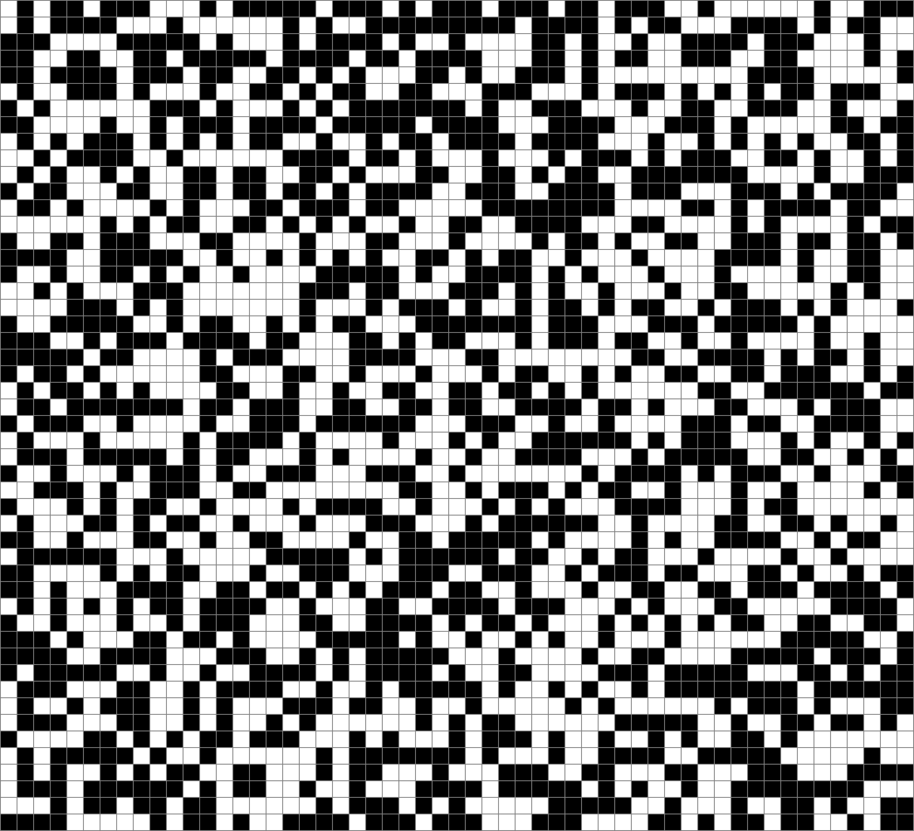
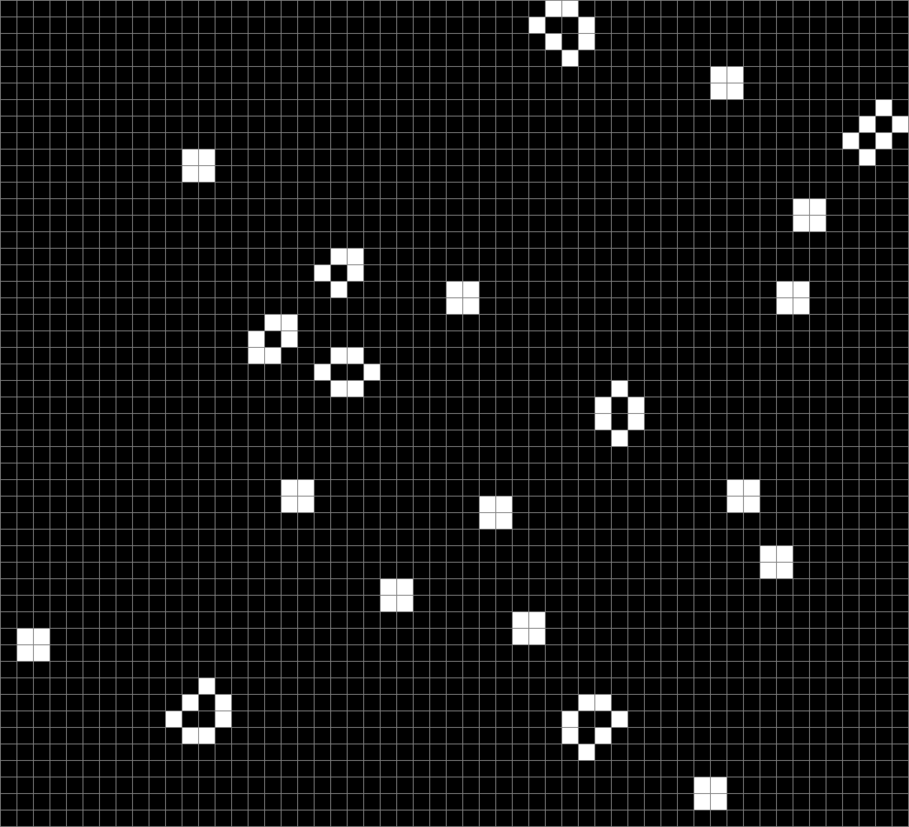
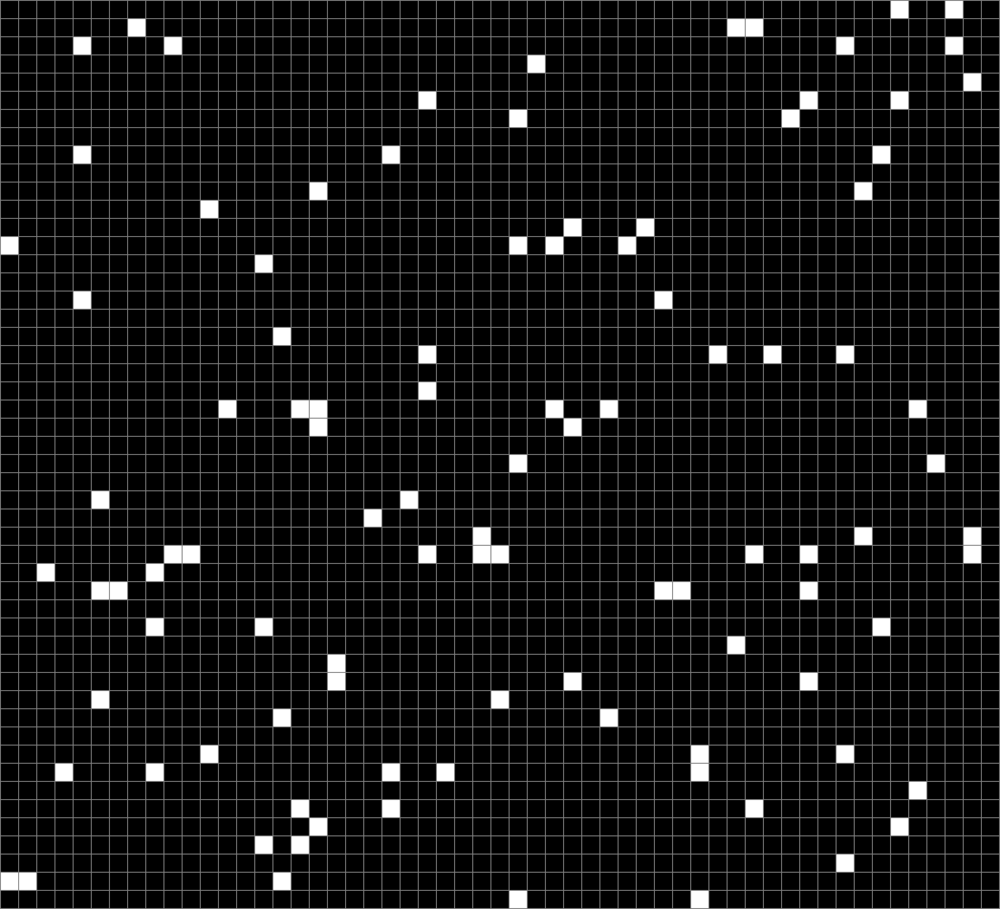
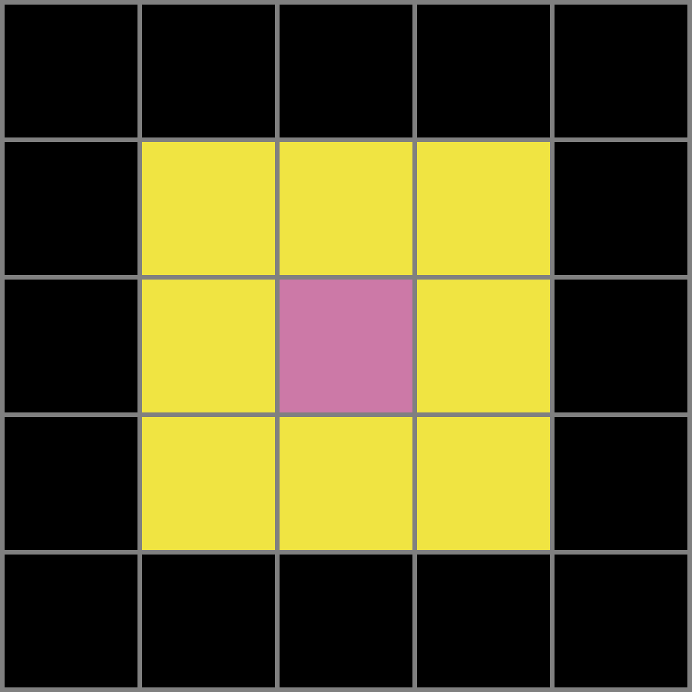
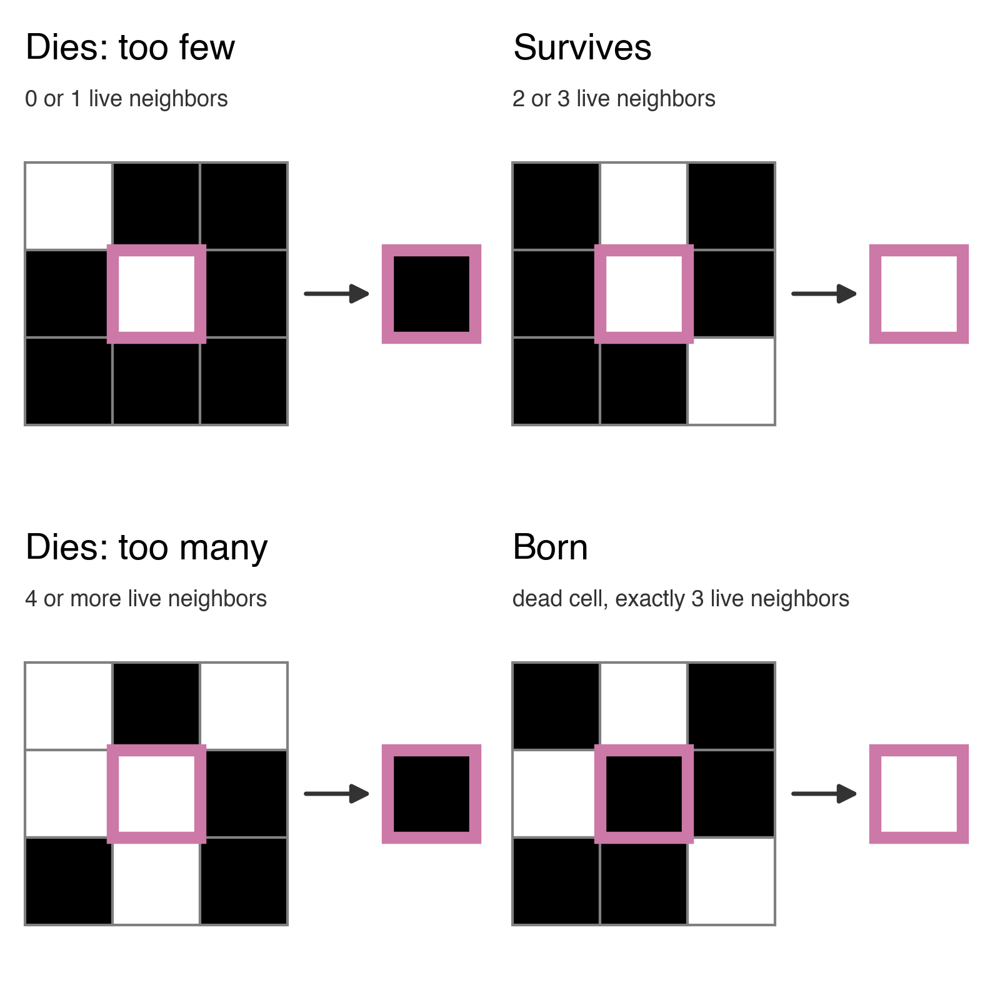
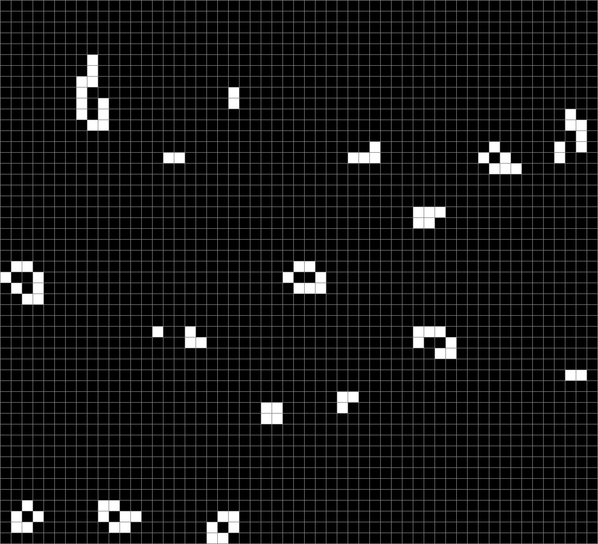
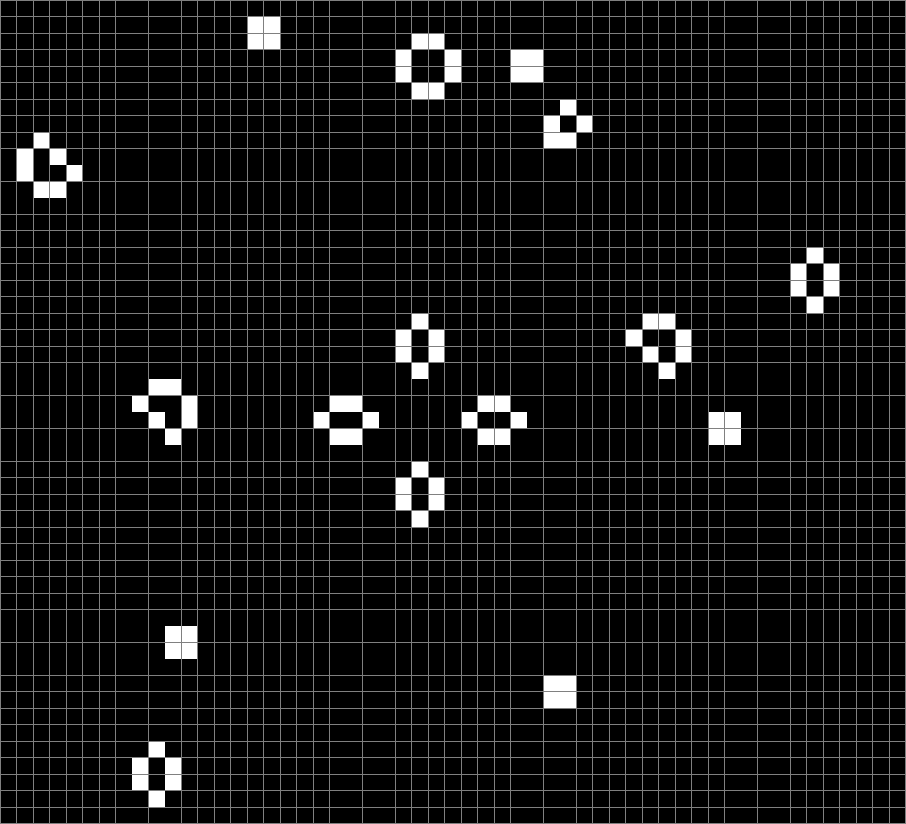
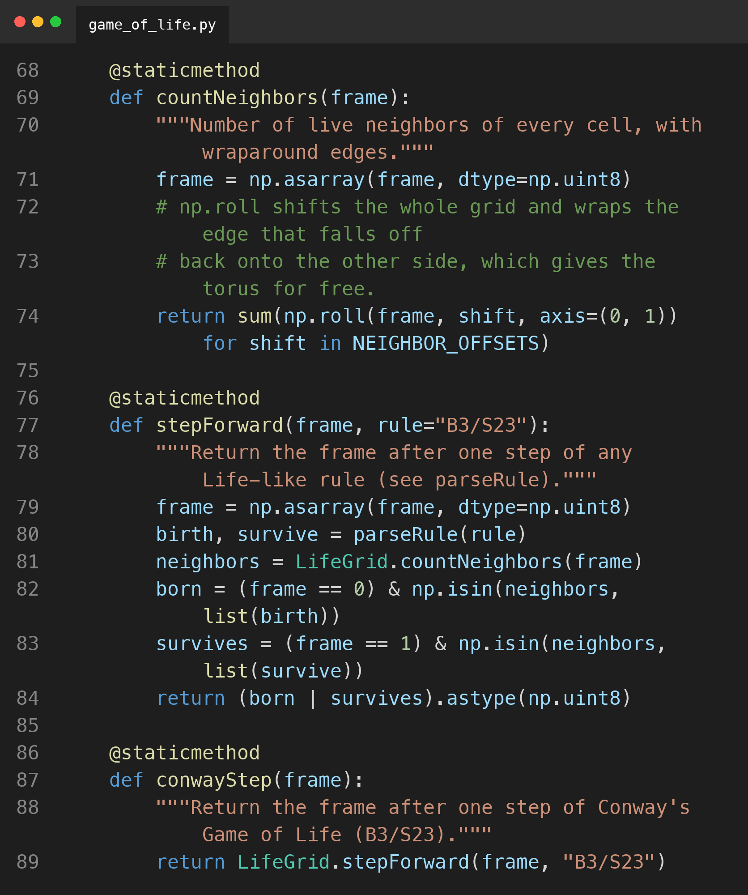

Game of Life slide images
Can you tell the difference? (Probably...)


Can you tell the difference?

With density matched, structure is the only difference. All 102 live cells in the Conway grid have 2 or 3 live neighbors. In the random grid, only 8 do, and 68 have none.
Helpful images


Perlin noise versus Conway


Same density and a similar look. On the next step, no cell in the Conway grid changes, while 36 cells in the Perlin grid do.
Code Example
